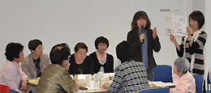

- 【日 時】
- 6月2日(木)10:30～15:00
- 【場 所】
- 浦和コミュニティーセンター第15集会室
- 【参 加 団 体】
- 県内消費者団体：24団体(82人) 資料提供参加：10団体
- さいたま市消団連､所沢市消団連､狭山市消団連、蓮田市消団連、飯能市消団連、埼玉県西部地区消費者団体活動推進世話人会､朝霞市くらしの会､伊奈町くらしの会､桶川市くらしの会､加須くらしの会､久喜市くらしの会､くまがやくらしの会､白岡町くらしの会､草加市くらしの会、NPO法人埼玉消費者被害をなくす会､生活協同組合さいたまコープ､生活協同組合パルシステム埼玉､埼玉県地域婦人会連合会､新日本婦人の会埼玉県本部､埼玉県生活協同組合連合会､埼玉母親大会連絡会､埼玉公団住宅自治会協議会､埼玉県生協ネットワーク協議会､埼玉県消費者団体連絡会
- 【行政担当課】
- 埼玉県消費生活課､埼玉県消費生活支援センター川越､草加市消費労政課吉川市商工課
■ミニ学習会

テーマ「消費者市民社会と消費者団体の役割」
講師：埼玉消費者被害をなくす会 理事長
池本 誠司 弁護士
○｢消費者市民社会｣をどうとらえるのか
考え方と対応としては平成20年の国民生活白書より、個人の選択行動が消費者・生活者にとって公正な市場をつくるということを中心に理解してきましたが、困窮者や高齢者までも社会の主役的役割を求められるのではなく、むしろ消費者市民が優しいまなざしで、一般的な消費者・生活者と連帯し、自らの学習をもとに社会的価値行動を広げていく事が大切です。
平成21年度から地方消費者行政活性化基金という財政支援が始まりましたが、残りの1年の予算は人材育成を重点にしてほしい。皆さんも、次の活動につなげるためにも仲間を増やし、多くの一般消費者と連帯して行動することが、消費者市民社会の本質なのではないでしょうか。
○地方消費者行政の強化と国の動向について
基金終了以降について、｢地方消費者行政専門調査会｣では、身近な相談窓口ネットワークや情報収集体制整備について国としても責任を持って推進、負担や支援等の検討要と議論。消費者庁｢地方消費者行政制度WG｣では、地方公共団体全体として消費者行政の｢総合力｣を向上させる視点が重要と報告。国は地域分権推進計画の中で、地方自治体の裁量を尊重する一括交付金方式に転換するとしています。私たちは、その交付金の使い方が本当にくらしの安全安心につながるのかみていく必要があります。
○国民生活センターのあり方の見直しについて
意見募集をしています。国センは各機能を消費者庁に移管し一元化、法人は平成25年度をもって解消へ。これまでの国センの機能は十分ではなく、より迅速な情報提供、地方支援機能を果たすことが求められています。
※消費者団体へのお願いとして、学習・調査・行動が継続的にできるよう地域の自治体に相談してみて下さい。どこで何を学習すべきかわからない人にとって、自治体による声かけは効果があり、それが強みです。それが仲間を増やすことにつながります。もうひとつは、財政と情報の支援（自治体から講師を依頼してもらうなど）について、自治体に動いてもらいましょう。その連携が大切です。
◆交流 グループに分かれて活動交流・情報交換
～第1グループ（11名参加）～
～第2グループ（12名参加）～
～第3グループ～（11名参加）
～第4グループ～（10名参加）
～第5グループ～（10名参加）
～第6グループ～（9名参加）

◆まとめ 伊藤埼玉消団連代表幹事･事務局長
県内の団体のつながりの場として10年続けての開催。同じ悩みを抱えながら頑張っていることを交流で実感出来ました。初参加の団体もあり、段々と広がりが持てています。くらしが最優先の消費者が主役の社会をめざして、頑張っていきましょう。